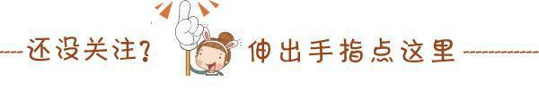
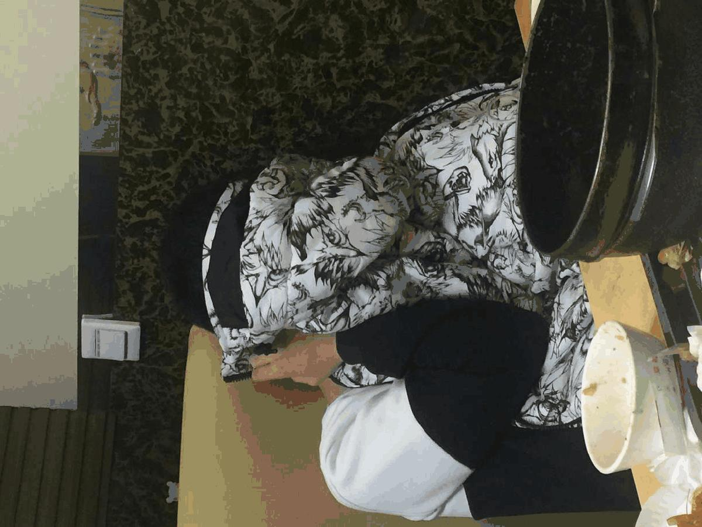

最美电协 最美外联部

在沈理工有这样一个社团
这样一群人
他们以梦为马，只争朝夕
他们坚持不懈的钻研机械信息
你们把实验室当成了家
这是你们的科研梦
幸好，这一路，你们并不孤单
科技的道路漫漫
有这样一群人在背后默默奉献
我相信我电子技术与应用协会
终将成长
成长我沈理工的科技协会
完成那为完成的科技梦
最美外联部
外联部的工作
（1）负责电协的对外活动；
（2）加强与兄弟院校电子协会的联系和合作；
现在大家一定很好奇这群默默奉献的人吧
那么就让我为大家介绍一下外联部的内部人员吧
1 首先介绍的是外联部部长丁鹏飞
哦，不，似乎弄错了时间，十年前的丁鹏飞

这才是现在的丁鹏飞
丁鹏飞，机械工程学院机械电子工程专业，电协外联部部长
部长寄语：希望外联部的小可爱们一起努力，虽然咱们的人最少，但是咱们最重要哦，希望你们团结起来，共同努力，共同进步，为电协的发展开路，不求做到最好，只求做的更好，你们都是好样的！
接下来是外联小可爱之一宋宇航
宋宇航 女 我真的不知道怎么介绍自己才算个性 喜欢交友 爱好美食 🙃🙃性格开朗吧 还是个超级萌妹子 最喜欢我的部长。
下一个是外联颇具文艺范儿的王博
自电院有女，电协大外联。
颜值九十九，智商一百分。
秀外又慧中，奈何我单身。
壮哉大外联，发扬不要脸。
下一位社会哥出场（小编看到照片的第一眼就是这么认为的）
下一位帅帅萌萌的小哥
下一位介绍一位“浪子”
哈喽 我是徐颖文 性别男爱好女！放荡不羁爱自由！ 人家都说我喜欢海，其实我是喜欢浪！！！ 人送绰号小浪文！
最后一位略显斯文的（学霸！？）
任健樟，计算机1班，吹过小号，打过太极；喜欢看书，也爱运动；喜欢平静，也喜欢激情After all，every coin has two sides.希望能和大家多交朋友。
自此，外联部的精英们就介绍完了，电协的发展离不开每个部门的配合，向哪些默默在背后奉献的人儿们致敬